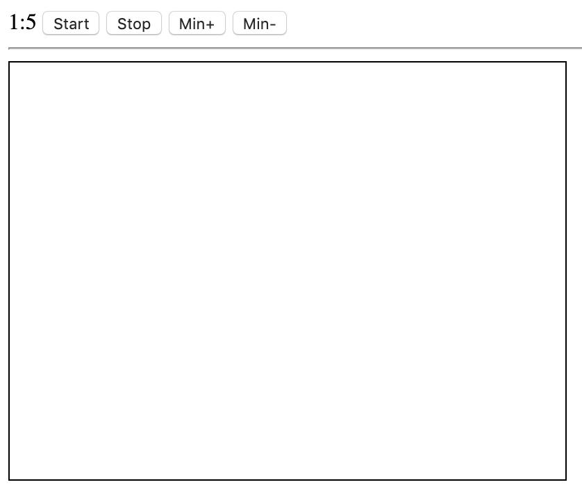

コンピューティング実習 第１３回課題
開発環境
- 開発環境はKenyaを使い，HTMLと埋め込まれたJavascriptプログラム（場合によってはCSSも使用して良い）として作成してください．
課題13-1 「流れ星」のアニメーション
次の動画で示すような流れ星アニメーションプログラムを作りなさい．
動作仕様（動画）
仕様
- 「Aボタン」を押すとキャンパス上に星（画像）が流れる．
- 星が枠下に到達すると，枠上に星が移動し，アニメーションを続ける．
- 星が枠右に到達すると，枠左に星が移動し，アニメーションを続ける
課題13-2 キッチンタイマー（１）５秒計
次の動画で示すような５秒のキッチンタイマーを作りなさい．
動作仕様（動画）
仕様
- Startボタンを押すと，ボタンの左隣にある数字（spanタグでプログラムから特定できる）が１秒毎にカウントダウンする．
- カウントが０になると，カウントを止め，キャンパスに「時間です！」と表示する．（テキストでも，任意の画像でも良い．）
課題13-3 キッチンタイマー（２）時間設定機能付き
次の仕様に示すようなキッチンタイマーを作りなさい．
画面仕様（静止画）

仕様
- ボタンの左隣に残時間計「分：秒」を用意する．
- 「min+」ボタンを押すと残時間計の「分」に１を足す．
- 「min-」ボタンを押すと残時間計の「分」から１を引く．（マイナスにならないようにする工夫も期待します）
- 「Start」ボタンを押すと，残時間計が１秒毎にカウントダウンする．（「秒の位」が０になったら，「分の位」に残りがあれば１を引き，「秒の位」を５９とする）
- 残時間計が０になると，カウントを止め，キャンパスに「時間です！」と表示する．（テキストでも，任意の画像でも良い．）
課題13-4 追いかけっこ（２）
次の動画で示すような追いかけっこプログラムを作りなさい．
動作仕様（動画）
仕様
- 追いかけっこゲームである
- canvasにユーザ（白丸）と敵（黒丸）を表示する．
- 丸の大きさは任意であるが，画面仕様での大きさは，直径10である．
- 「Start」ボタンを押すと，ゲームをスタートする．
- 敵は1/2秒（500ミリ秒）ごとに，敵も乱数を使い，1/4の確率で上下左右いずれかに移動する．
- プレイヤーは4つの方向ボタンで，白丸を操作する．
- 敵を捕まえたら，クリアである．
- クリアしたときの処理は，しなくても構わないが，プログラム敵を止める，クリア画像を表示する，などの工夫は歓迎する．